CT Automotive
Freistehender Pylon mit beleuchteter Lichtkante, dazu plastische Einzelbuchstaben am Vordach — beides in derselben Formensprache, damit es als ein Auftritt gelesen wird.
Werbepylon3D-BuchstabenBeleuchtungMontage
Logo, Printmedien, Arbeitsbekleidung, Werbeartikel, Beschilderung und Fahrzeugbeschriftung — alles aus einer Hand, damit am Eröffnungstag nichts fehlt.
Sie sperren in ein paar Wochen auf und brauchen alles gleichzeitig. Wir übernehmen das komplette Erscheinungsbild — von der ersten Skizze bis zur Montage am Gebäude.
Hausmeisterdienste Silvio — vom ersten Entwurf bis zum folierten Fahrzeug. Die gezeichnete Landschaft aus dem Logo läuft auf der Visitenkarte weiter und endet als Kontur auf dem Bus.
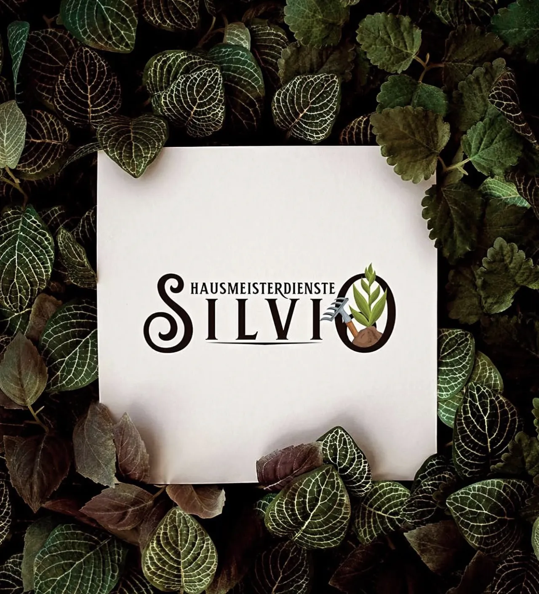
Serifenschrift mit verschnörkeltem S, das O wird zum Beet mit Rechen und Pflanze — ein Bild, das man auch aus zehn Metern noch erkennt.
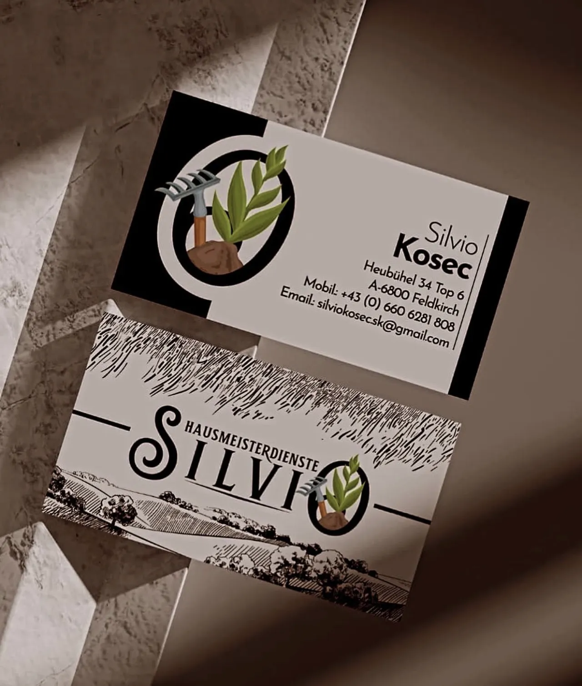
Vorderseite mit Kontaktdaten, Rückseite mit der gezeichneten Wiesenlandschaft — dasselbe Motiv, das später am Fahrzeug wieder auftaucht.
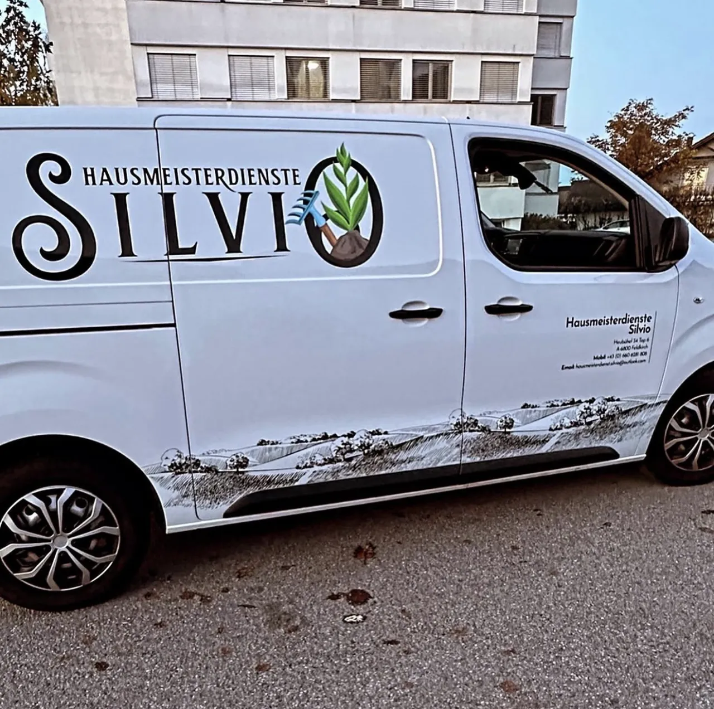
Logo auf der Schiebetür, Kontaktdaten am Heck, die Landschaft als durchgehendes Band über die ganze Fahrzeugseite.
Die reine Produktion. Dazu Gestaltung, Aufmaß und Montage — insgesamt rund 9 Wochen vom Erstgespräch bis zur Eröffnung. Was das für Ihren Termin heißt, rechnet der Zeitplaner aus.
Ein Logo, das auf dem Leuchtschild genauso funktioniert wie auf der Arbeitsjacke und dem Firmenbus. Kein Nachjustieren zwischen Lieferanten.
Workwear, Werbeartikel und Folierung entstehen im Haus in Meiningen.
Sie rufen eine Nummer an — nicht sechs. Auch bei der Montage.
Wir planen rückwärts vom Eröffnungstag. Was zuerst fertig sein muss, wird zuerst produziert — und wenn es eng wird, sagen wir das vorher, nicht hinterher.
Leuchtschilder und Pylone fertigen wir mit erprobten Produktionspartnern in Europa — Aufmaß, Freigabe und Montage bleiben bei uns.
Werbetechnik-Projekte aus Vorarlberg und Umgebung — fotografiert nach der Montage, nicht im Rendering.
Freistehender Pylon mit beleuchteter Lichtkante, dazu plastische Einzelbuchstaben am Vordach — beides in derselben Formensprache, damit es als ein Auftritt gelesen wird.
Aus dem alten schwarz-goldenen Vordach wurde ein ruhiger, dunkelgrüner Auftritt mit plastischer Lotusblüte — dazu ein senkrechter Ausleger, der die Straße entlang gelesen wird. Abends leuchtet beides.
Großflächiges 3D-Signet auf der Hallenfassade, aufgesetzte Buchstaben im Empfang und Glasdekor im Büro — außen wie innen dieselbe Handschrift.
Durchgehendes Fassadenband in Signalorange mit weißen 3D-Buchstaben — auf Distanz lesbar, auch quer über den Parkplatz.
Weiße Einzelbuchstaben auf rotem Grund mit Strahlern, darunter ein Großformatdruck mit Produktmotiven — aufgenommen am Montagetag.
Illustriertes Maskottchen, Wiesenband als Sichtschutz in Augenhöhe und der Schriftzug im Oberlicht — der Auftritt läuft bis auf die Eingangstür weiter.
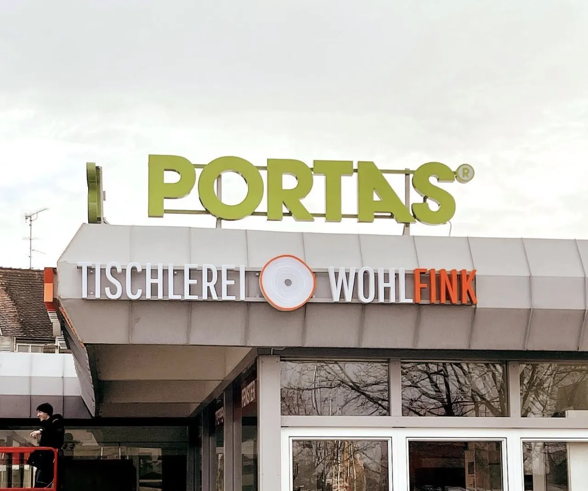
Zwei Ebenen: Partnermarke auf dem Dach, eigener Name im Fassadenband — aufgenommen während der Montage von der Hebebühne aus.
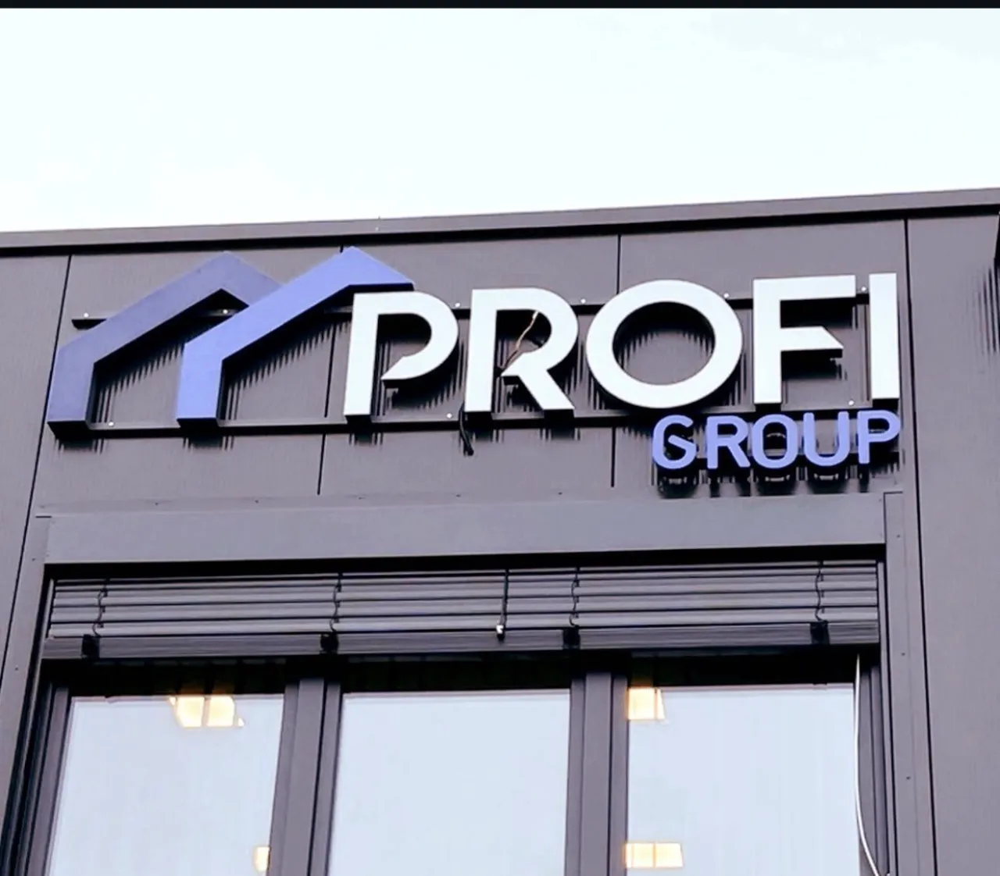
Hinterleuchtete Einzelbuchstaben samt Dachsignet — bei Dämmerung liest man den Namen quer über den Vorplatz.
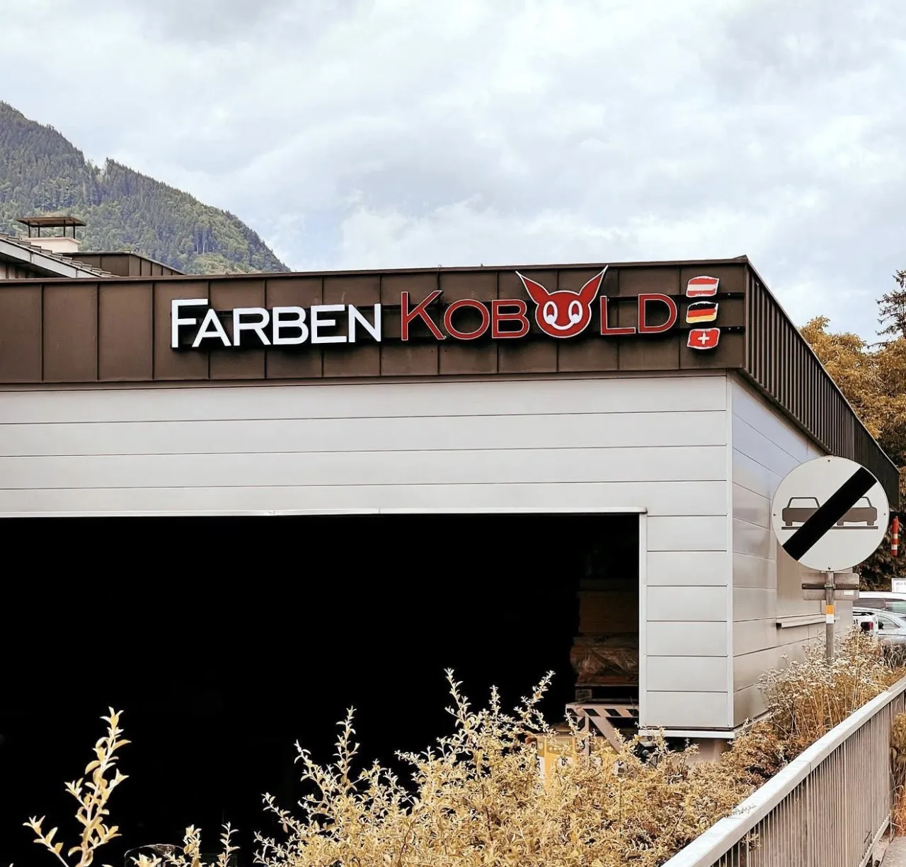
Zweifarbiger Schriftzug mit dem Kobold als Blickfang, dazu die Länderfahnen — auf dem Dachrand montiert.
Vom Schaufenster bis zur Theke: eine Bildwelt, die drinnen und draußen dieselbe Sprache spricht.
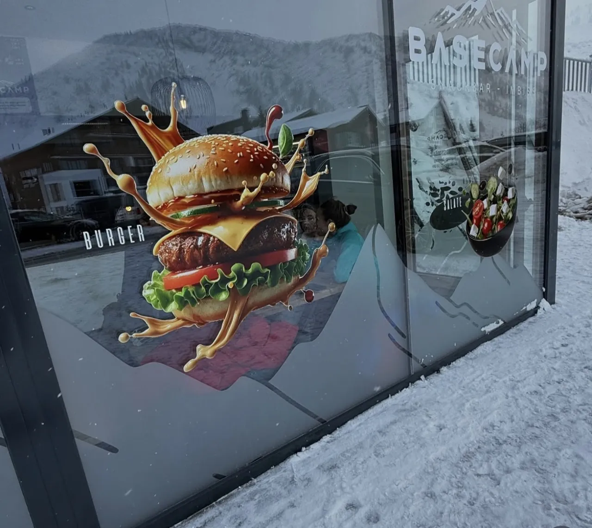
Freigestelltes Produktmotiv auf der Bergsilhouette — auch bei Schneetreiben noch lesbar.
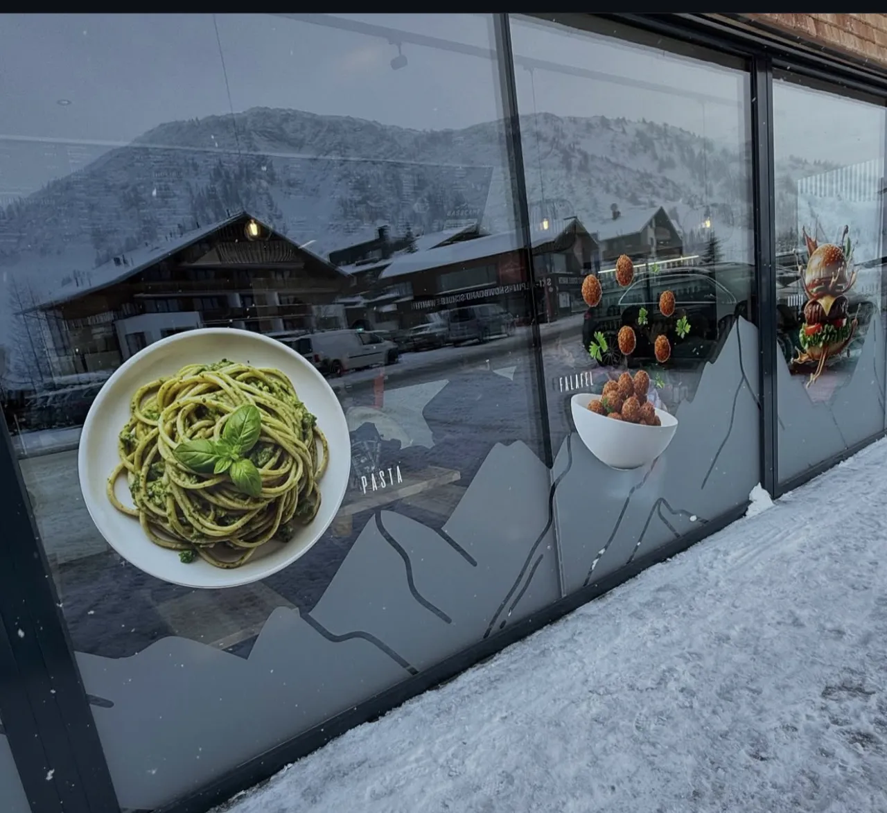
Eine durchgehende Linie über alle Scheiben verbindet die einzelnen Motive zu einem Auftritt.
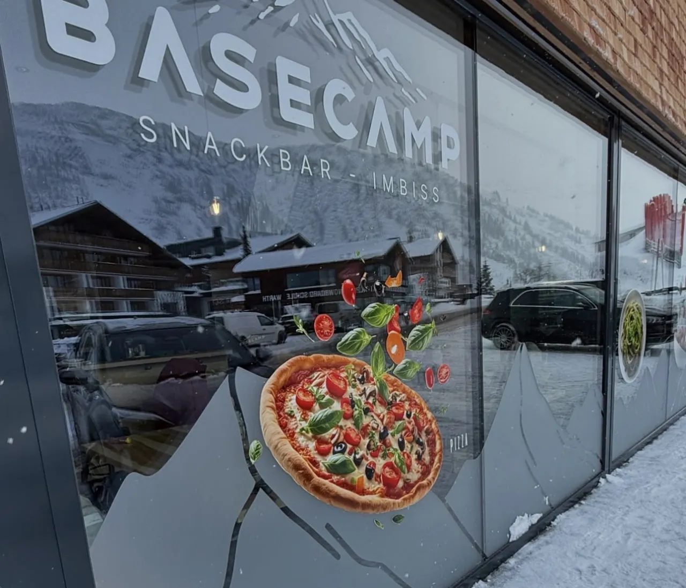
Der Schriftzug sitzt über Augenhöhe — sichtbar, ohne den Blick in den Gastraum zu verstellen.
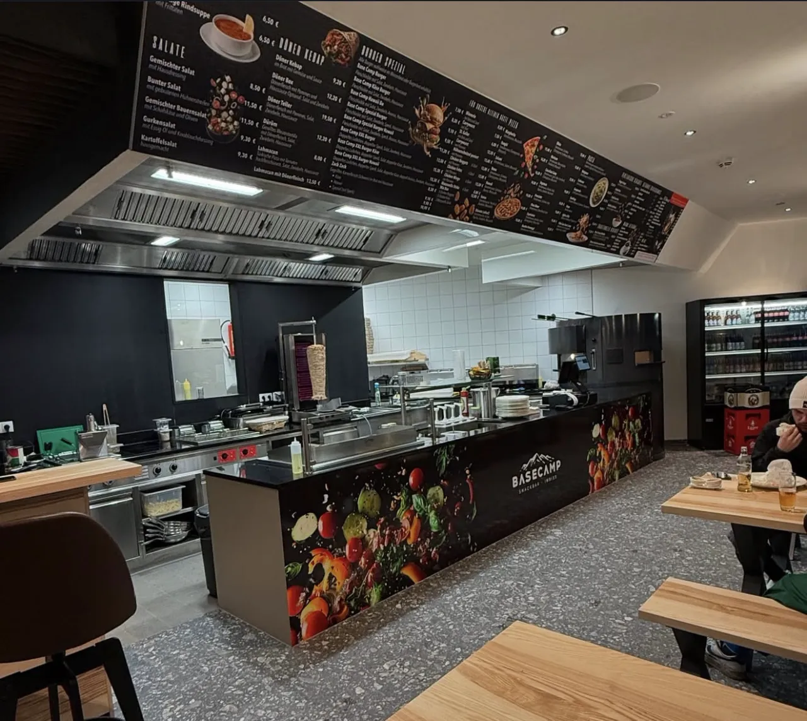
Thekenfolierung mit Zutatenmotiv und die durchlaufende Menütafel über der Küche — gedruckt, montiert, fertig zur Eröffnung.
Neon-Optik in moderner LED-Technik — die Röhren sind neu am Markt: gleiche Wirkung wie klassisches Neon, aber bruchsicher, sparsam und wartungsarm.
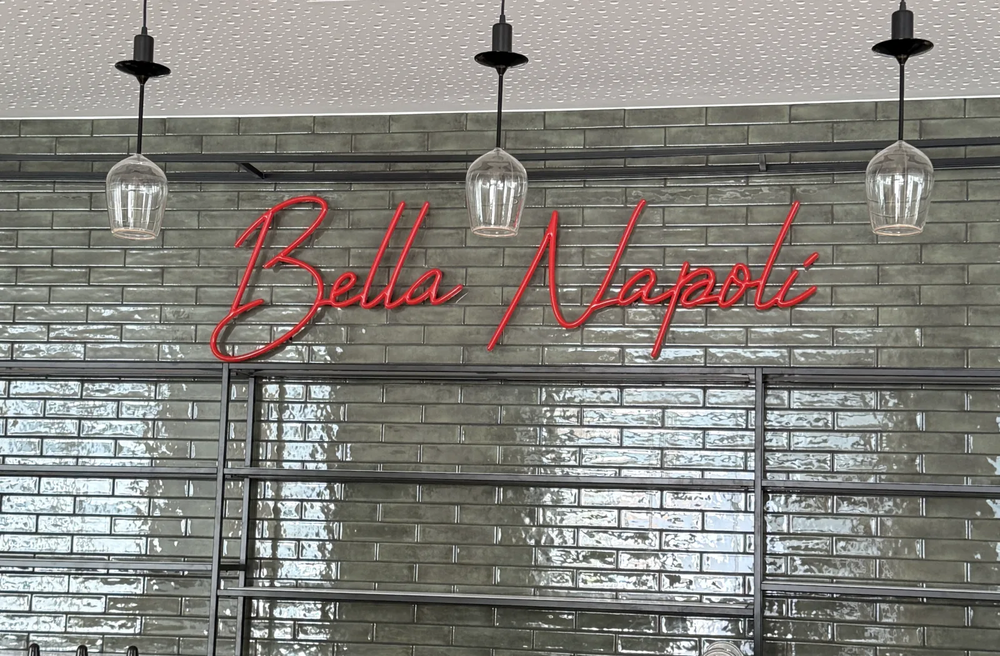
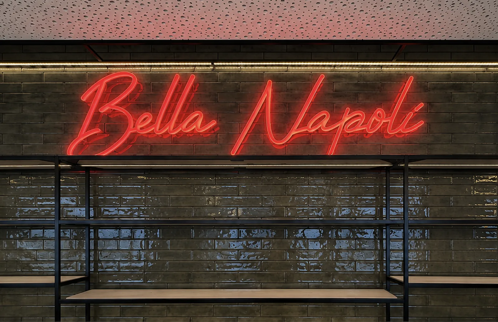
AusHandgeformter Schriftzug in LED-Neon über der Theke. Dasselbe Schild, einmal aus und einmal an — legen Sie den Schalter um.
Fünf Schritte vom ersten Telefonat bis zum montierten Schild.
Wir schauen uns an, was Sie vorhaben, was das Gebäude hergibt und wann Sie aufsperren.
ca. 1 WocheLogo und Erscheinungsbild entstehen. Sie sehen echte Entwürfe, keine Stockvorlagen.
ca. 2 WochenWir messen vor Ort, klären Genehmigungen und Sie geben die Produktionsdaten frei.
ca. 1 WocheWorkwear, Werbeartikel und Folierung im Haus, Beschilderung über unsere Produktionspartner.
3–5 WochenSait kommt selbst — Schild hängt, Bus ist foliert, Team ist eingekleidet.
ca. 1 WocheTragen Sie Ihren Eröffnungstermin ein — wir rechnen zurück, wann welcher Schritt beginnen muss.
Termin und Vorhaben stehen schon in der Nachricht — Sie können alles vor dem Senden ändern. Zurück kommt eine ehrliche Einschätzung, was bis zu Ihrem Termin machbar ist. Ihre Nachricht landet direkt bei Sait Simsek.
Richtwerte aus laufenden Projekten — den genauen Plan stimmen wir im Erstgespräch auf Ihr Vorhaben ab. Dort bekommen Sie auch einen ehrlichen Kosten-Richtwert, unverbindlich.
Einzeln buchbar — im Komplettpaket greifen die Teile ineinander.
Leuchtkästen, 3D-Buchstaben, LED-Neon und Pylone — das Schild, das nach Ladenschluss weiterarbeitet.
AnsehenWortmarke, Signet und Farbwelt — so gebaut, dass sie auf Schild, Jacke und Bus gleich gut funktionieren.
AnsehenVisitenkarten, Flyer, Speisekarten, Banner — im Haus gedruckt, in einem Rutsch abgestimmt.
AnsehenBestickt oder bedruckt, aus eigener Produktion. Nachbestellen geht auch in zwei Jahren noch.
AnsehenVom Kugelschreiber bis zur Kaffeetasse — bedruckt mit dem Logo, das wir selbst gebaut haben.
AnsehenVom dezenten Schriftzug bis zur Vollfolierung. Jeder Firmenwagen wird zur fahrenden Werbefläche.
AnsehenEine Seite, die zum Schild an der Fassade passt — und auf dem Handy genauso funktioniert.
Ansehen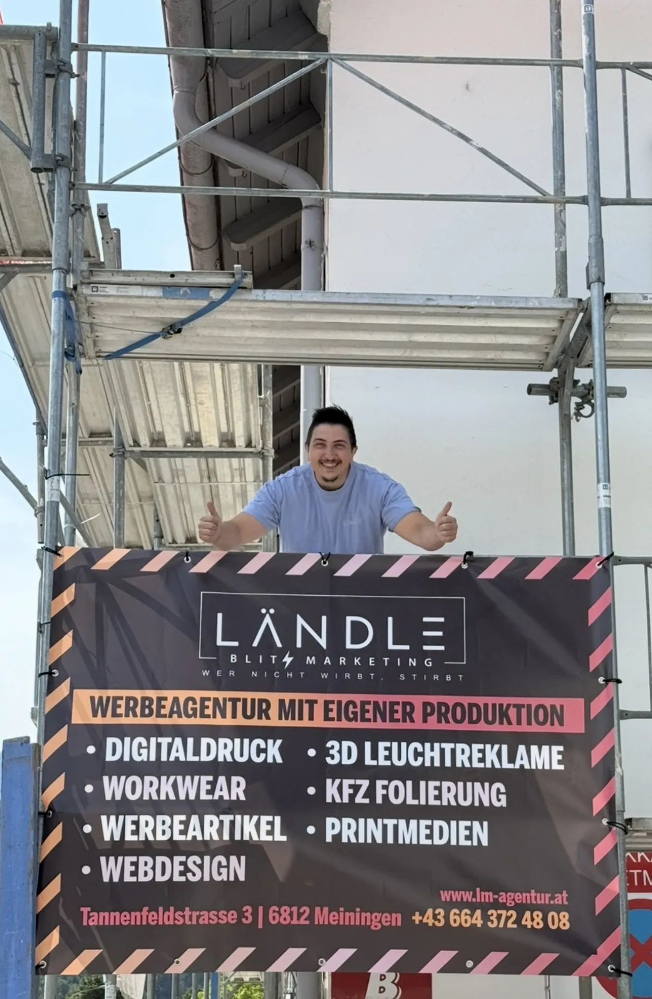
Meiningen · MontageIch bin Sait Simsek und führe Ländle Blitz Marketing seit 2018. Ich zeichne das Logo, ich stehe bei der Produktion daneben — und wenn das Schild montiert wird, stehe ich auf dem Gerüst.
Bei einer Neueröffnung zählt, dass jemand den Überblick behält und erreichbar ist, wenn drei Tage vor der Eröffnung noch etwas dazwischenkommt. Genau dafür bin ich da.
Unsere Werkstatt steht in Meiningen bei Feldkirch. Montiert wird in ganz Vorarlberg — unter anderem in Feldkirch, Dornbirn, Bludenz, Frastanz und Warth.
Acht kurze Filme von echten Aufträgen — vom Kranaufbau bis zur Fensterfolierung.
Sagen Sie uns Ihren Eröffnungstermin — wir sagen Ihnen, was bis dahin machbar ist und was es ungefähr kostet.
Keiner dran? Dann steht Sait gerade auf einem Gerüst — schreiben Sie WhatsApp, er meldet sich.